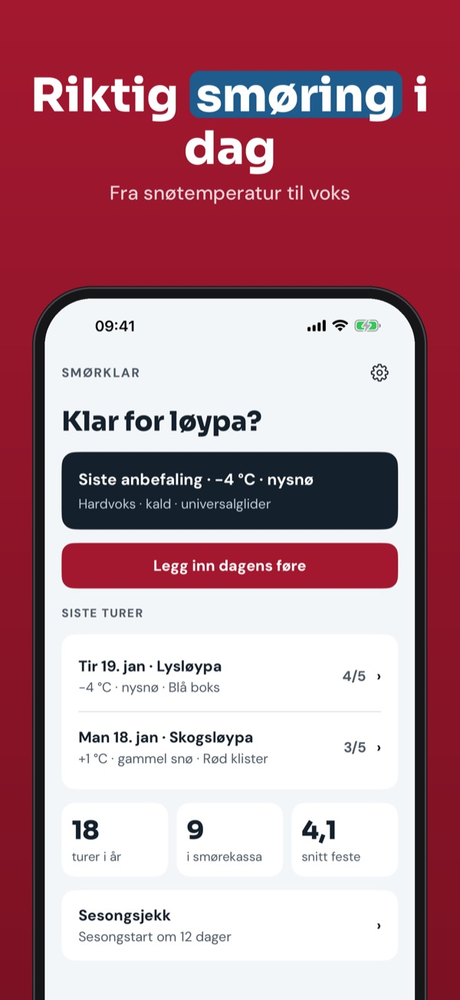
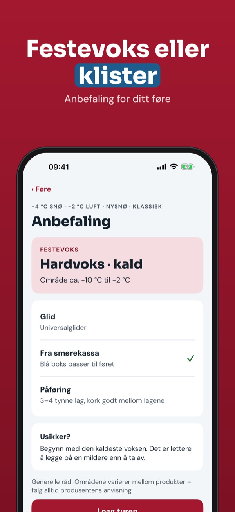
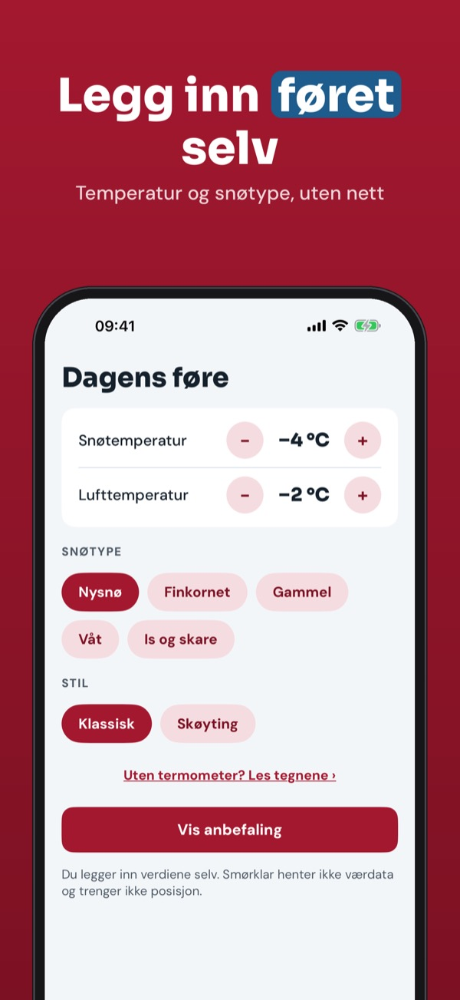
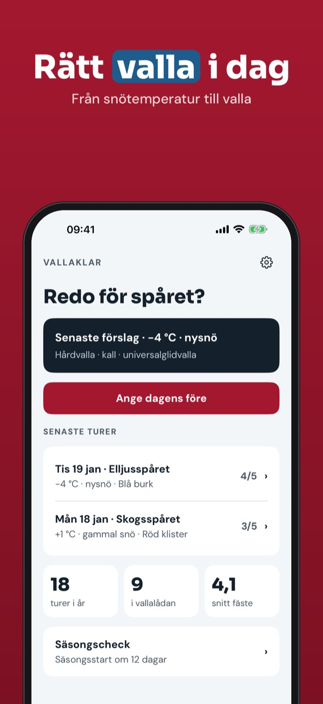
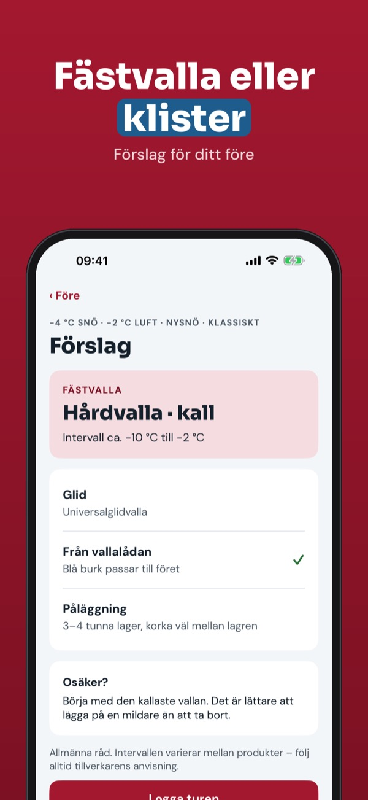
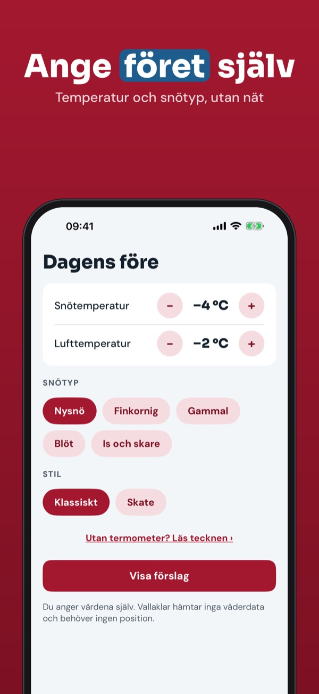
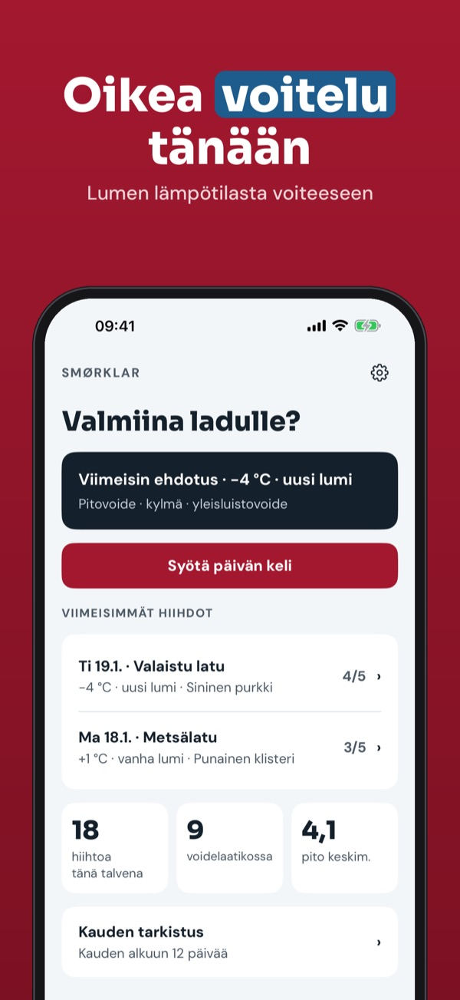
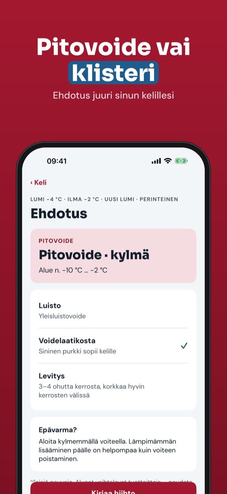
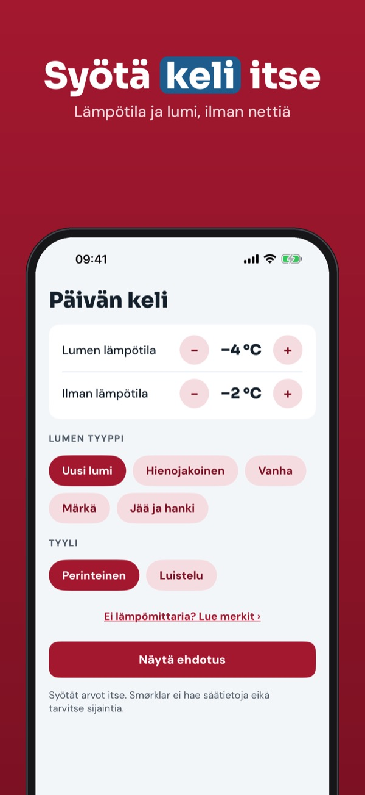

Festevoks, klister og glid
Legg inn snøtemperatur og føre, og få riktig smøreklasse – festevoks eller klister. Med smørekasse og smørelogg, også uten nett i løypa.



Smørklar hjelper deg å velge smøring til langrenn: du legger inn snøtemperatur, lufttemperatur og snøtype, og får forslag til smøreklasse for feste og glid.
Anbefaling for kaldt føre, 5 voks i smørekassa og tips uten termometer kan brukes uten kjøp. Full versjon er et engangskjøp som låser opp alle føretyper, klisterguide, ubegrenset logg og sesongsjekk. Ingen abonnement.
Smørklar gir generelle råd og er ikke tilknyttet noe smøremerke. Følg alltid produsentens anvisning. Appen henter ikke værdata.
Terms of Use (EULA): https://www.apple.com/legal/internet-services/itunes/dev/stdeula/
Privacy: https://baytechbv.github.io/privacy/skismoring-nordic/
Fästvalla, klister och glid
Ange snötemperatur och före och få rätt vallaklass – fästvalla eller klister. Med vallalåda och vallalogg, även utan nät i spåret.



Vallaklar hjälper dig att välja valla för längdskidor: du anger snötemperatur, lufttemperatur och snötyp och får förslag på vallaklass för fäste och glid.
Förslag för kallt före, 5 vallor i vallalådan och tips utan termometer kan användas utan köp. Fullversionen är ett engångsköp som låser upp alla typer av före, klisterguide, obegränsad logg och säsongscheck. Ingen prenumeration.
Vallaklar ger allmänna råd och är inte knuten till något vallamärke. Följ alltid tillverkarens anvisning. Appen hämtar inga väderdata.
Terms of Use (EULA): https://www.apple.com/legal/internet-services/itunes/dev/stdeula/
Privacy: https://baytechbv.github.io/privacy/skismoring-nordic/
Pitovoide, klisteri ja luisto
Syötä lumen lämpötila ja keli, saat oikean voideluokan – pitovoide tai klisteri. Voidelaatikko ja voitelupäiväkirja, myös ilman nettiä ladulla.



Smørklar auttaa valitsemaan voitelun murtomaahiihtoon: syötät lumen ja ilman lämpötilan sekä lumen tyypin ja saat ehdotuksen pito- ja luistovoiteluun.
Kylmän kelin ehdotus, 5 voidetta voidelaatikossa ja vinkit ilman lämpömittaria ovat käytössä ilman ostoa. Täysi versio on kertaosto, joka avaa kaikki kelit, klisterioppaan, rajattoman päiväkirjan ja kauden tarkistuksen. Ei tilausta.
Smørklar antaa yleisiä neuvoja eikä ole sidoksissa mihinkään voidemerkkiin. Noudata aina valmistajan ohjeita. Sovellus ei hae säätietoja.
Terms of Use (EULA): https://www.apple.com/legal/internet-services/itunes/dev/stdeula/
Privacy: https://baytechbv.github.io/privacy/skismoring-nordic/